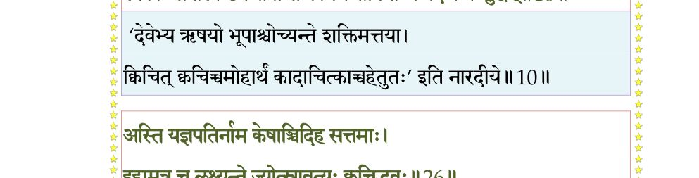
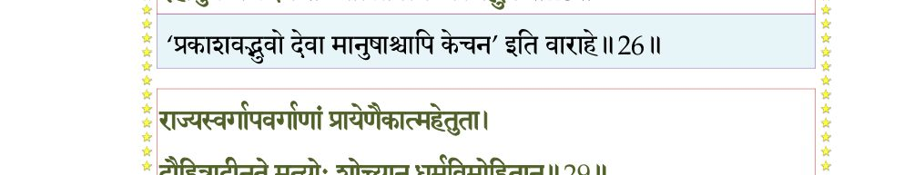
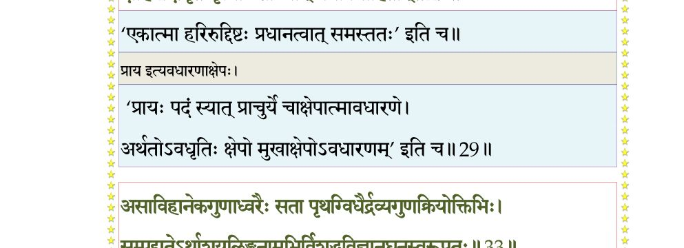
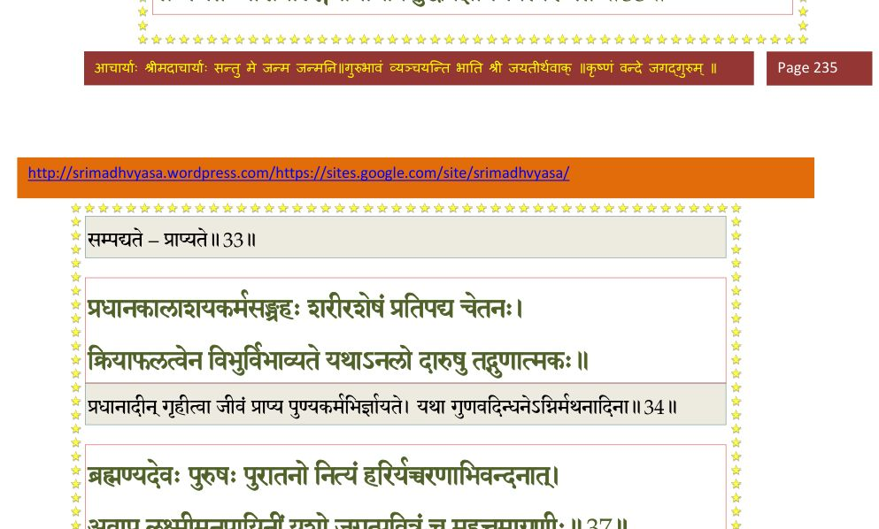
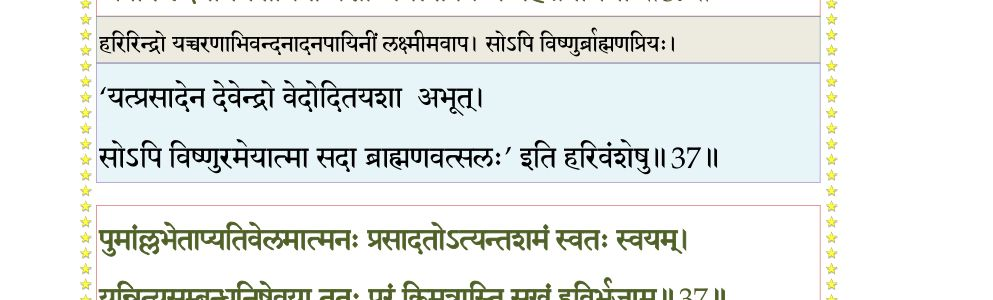
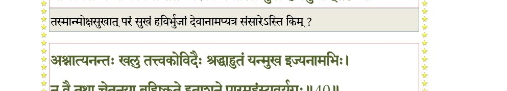
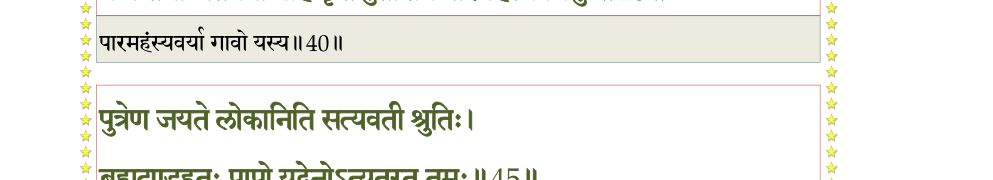
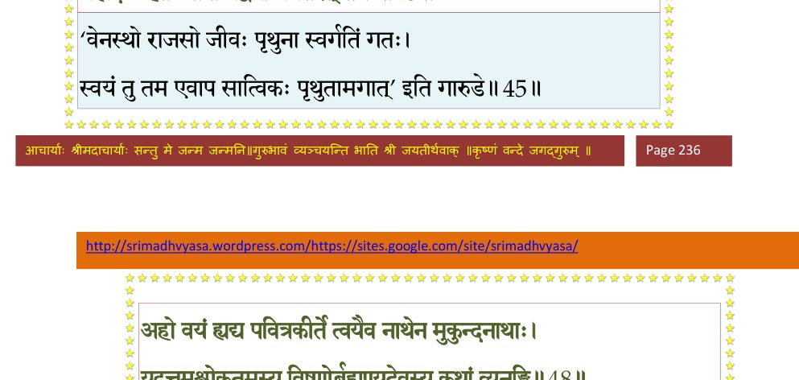
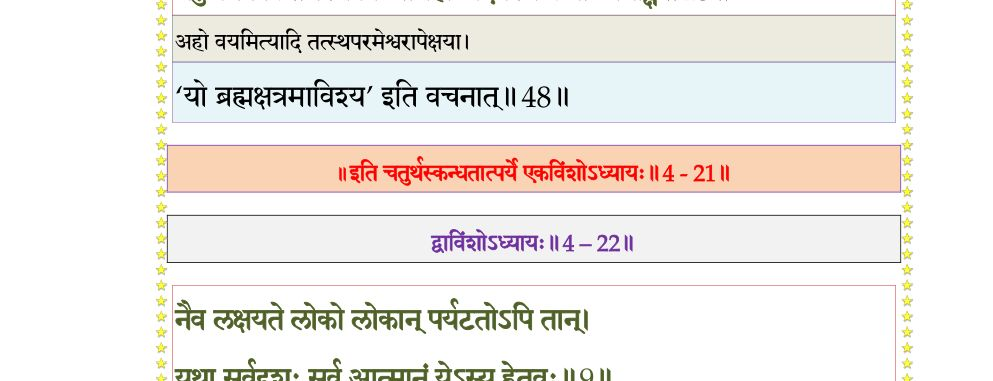

स्कन्ध 4 · अध्याय 21
श्लोक १
मैत्रेय उवाच–
मौक्तिकैः कुसुमस्रग्भिर्दुकूलैः स्वर्णतोरणैः ।
महासुरभिभिर्धूपैर्मण्डितं तत्र तत्र वै।। १ ।।
मौक्तिकैः कुसुमस्रग्भिर्दुकूलैः स्वर्णतोरणैः ।
महासुरभिभिर्धूपैर्मण्डितं तत्र तत्र वै।। १ ।।
श्लोक २
चन्दनागुरुतोयार्द्ररथ्याचत्वरमार्गवत् ।
पुष्पाक्षतफलैस्तोयैर्लाजैरर्चिभिरर्चितम्।। २ ।।
पुष्पाक्षतफलैस्तोयैर्लाजैरर्चिभिरर्चितम्।। २ ।।
श्लोक ३
संवृतैः कदलीस्तम्भैः पूगपोतैः परिष्कृतम् ।
तरुपल्लवमालाभिः सर्वतः समलंकृतम्।। ३ ।।
तरुपल्लवमालाभिः सर्वतः समलंकृतम्।। ३ ।।
श्लोक ४
प्रजास्तं दीपबलिभिः संभृताशेषमङ्गलैः ।
अभीयुर्मृष्टकन्याश्च मृष्टकुण्डलमण्डिताः।। ४ ।।
अभीयुर्मृष्टकन्याश्च मृष्टकुण्डलमण्डिताः।। ४ ।।
श्लोक ५
शङ्खदुन्दुभिघोषेण ब्रह्मघोषेण चर्त्विजाम् ।
विवेश भवनं वीरः स्तूयमानो गतस्मयः।। ५ ।।
विवेश भवनं वीरः स्तूयमानो गतस्मयः।। ५ ।।
श्लोक ६
पूजितः पूजयामास तत्र तत्र महायशाः ।
पौरान् जानपदांस्तांस्तान् प्रीतः प्रियवरप्रदः।। ६ ।।
पौरान् जानपदांस्तांस्तान् प्रीतः प्रियवरप्रदः।। ६ ।।
श्लोक ७
स एवमादीन्यनवद्यचेष्टितः कर्माणि भूयांसि महन्महत्तमः ।
कुर्वन् शशासावनिमण्डलं यशः स्फीतं निधायारुरुहे परं पदम्।।७।।
कुर्वन् शशासावनिमण्डलं यशः स्फीतं निधायारुरुहे परं पदम्।।७।।
श्लोक ८
सूत उवाच–
श्रुत्वाऽऽदिराजस्य यशो विजृम्भितं गुणैरशेषैर्गुणवत्सभाजितम् ।
क्षत्ता महाभागवतः सदस्पते कौशारविं प्राह गुरुं समर्चयन्।। ८ ।।
श्रुत्वाऽऽदिराजस्य यशो विजृम्भितं गुणैरशेषैर्गुणवत्सभाजितम् ।
क्षत्ता महाभागवतः सदस्पते कौशारविं प्राह गुरुं समर्चयन्।। ८ ।।
श्लोक ९
विदुर उवाच–
सोऽभिषिक्तः पुथुर्विप्रैर्लब्धाशेषसुरार्हणः ।
बिभ्रच्च वैष्णवं तेजो बाह्वोर्याभ्यां दुदोह गाम्।। ९ ।।
सोऽभिषिक्तः पुथुर्विप्रैर्लब्धाशेषसुरार्हणः ।
बिभ्रच्च वैष्णवं तेजो बाह्वोर्याभ्यां दुदोह गाम्।। ९ ।।
श्लोक ११
को न्वस्य कीर्तिं न शृृणोत्यभिज्ञो यद्विक्रमोच्छिष्टमशेषभूपाः ।
लोकाः सपाला उपजीवन्ति काममद्यापि तन्मे वद कर्म शुद्धम्।।१०
मैत्रेय उवाच–
गङ्गायमुनयोर्नद्योरन्तरा क्षेत्रमावसन् ।
आरब्धानेव बुभुजे भोगान् पुण्यजिहासया।। ११ ।।
लोकाः सपाला उपजीवन्ति काममद्यापि तन्मे वद कर्म शुद्धम्।।१०
मैत्रेय उवाच–
गङ्गायमुनयोर्नद्योरन्तरा क्षेत्रमावसन् ।
आरब्धानेव बुभुजे भोगान् पुण्यजिहासया।। ११ ।।
भागवततात्पर्यनिर्णय

श्लोक १२
सर्वत्रास्खलितादेशः सप्तद्वीपैकदण्डधृक् ।
अन्यत्र ब्राह्मणकुलादन्यत्राच्युतगोत्रतः।। १२ ।।
अन्यत्र ब्राह्मणकुलादन्यत्राच्युतगोत्रतः।। १२ ।।
श्लोक १३
एकदाऽऽसीन्महासत्रदीक्षा तत्र दिवौकसाम् ।
समाजो ब्रह्मर्षीणां च देवर्षीणां च सत्तम।। १३ ।।
समाजो ब्रह्मर्षीणां च देवर्षीणां च सत्तम।। १३ ।।
श्लोक १४
तस्मिन्नर्हत्सु सर्वेषु स्वर्चितेषु यथार्हतः ।
उत्थितः स सदोमध्ये ताराणामुडुराडिव।। १४ ।।
उत्थितः स सदोमध्ये ताराणामुडुराडिव।। १४ ।।
श्लोक १५
प्रांशुः पीनायतभुजो गौरः कञ्जारुणेक्षणः ।
सुनासः सुमुखः सौम्यः पीनांसः सुद्विजस्मितः।। १५ ।।
सुनासः सुमुखः सौम्यः पीनांसः सुद्विजस्मितः।। १५ ।।
श्लोक १६
व्यूढवक्षा बृहच्छ्रोणिर्वलीवल्गुतरोदरः ।
आवर्तनाभिरोजस्वी काञ्चनोरुरुदग्रवाक्।। १६ ।।
आवर्तनाभिरोजस्वी काञ्चनोरुरुदग्रवाक्।। १६ ।।
श्लोक १७
सूक्ष्मवक्रासितस्निग्धमूर्धजः कम्बुकन्धरः ।
महाधने दुकूलाग्रये परिधायोपधाय च।। १७ ।।
महाधने दुकूलाग्रये परिधायोपधाय च।। १७ ।।
श्लोक १८
व्यञ्जिताशेषगात्रश्रीर्नियमे न्यस्तभूषणः ।
कृष्णाजिनधरः श्रीमान् कुशपाणिः कृतोचितः।। १८ ।।
कृष्णाजिनधरः श्रीमान् कुशपाणिः कृतोचितः।। १८ ।।
श्लोक १९
शिशिरस्निग्धताराक्षः तानैक्षत समन्ततः ।
ऊचिवानिदमुर्वीशः सदस्यान् हर्षयन्निव ।
चारु चित्रपदं श्लक्ष्णं हृद्यं गूढमविक्लवम्।। १९ ।।
ऊचिवानिदमुर्वीशः सदस्यान् हर्षयन्निव ।
चारु चित्रपदं श्लक्ष्णं हृद्यं गूढमविक्लवम्।। १९ ।।
श्लोक २०
पृथुरुवाच –
सभ्याः शृणुत भद्रं वः साधवो य इहागताः ।
सत्सु जिज्ञासुभिर्धर्ममावेद्यं स्वमनीषितम्।। २० ।।
सभ्याः शृणुत भद्रं वः साधवो य इहागताः ।
सत्सु जिज्ञासुभिर्धर्ममावेद्यं स्वमनीषितम्।। २० ।।
श्लोक २१
अहं दण्डधरो धात्रा प्रजानामिह योजितः ।
रक्षिता वृत्तिदस्तेषु सेतुषु स्थापिता पृथक्।। २१ ।।
रक्षिता वृत्तिदस्तेषु सेतुषु स्थापिता पृथक्।। २१ ।।
श्लोक २२
तस्य मे तदनुष्ठानाद् यदाहुर्ब्रह्मवादिनः ।
लोकाः स्युः कामसंदोहा यस्य तुष्यति दिष्टदृक्।। २२ ।।
लोकाः स्युः कामसंदोहा यस्य तुष्यति दिष्टदृक्।। २२ ।।
श्लोक २३
य उद्धरेत् करं राजा प्रजा धर्मेष्वशिक्षयन् ।
प्रजानां शमलं भुङ्क्ते भागं च स्वं जहाति सः।। २३ ।।
प्रजानां शमलं भुङ्क्ते भागं च स्वं जहाति सः।। २३ ।।
श्लोक २४
तत् प्रजा भर्तृपिण्डार्थं स्वार्थमप्यनसूयवः ।
कुरुताधोक्षजधियं तर्हि मेऽनुग्रहः कृतः।। २४ ।।
कुरुताधोक्षजधियं तर्हि मेऽनुग्रहः कृतः।। २४ ।।
श्लोक २५
यूयं तदनुमोदध्वं पितृदेवर्षयोऽमलाः ।
कर्तुः शास्तुरनुज्ञातुस्तुल्यं यत् प्रेत्य तत् फलम्।। २५ ।।
कर्तुः शास्तुरनुज्ञातुस्तुल्यं यत् प्रेत्य तत् फलम्।। २५ ।।
श्लोक २६
अस्ति यज्ञपतिर्नाम केषांचिदिह सत्तमाः ।
इहामुत्र च लक्ष्यन्ते ज्योत्स्नावत्यः क्वचिद् भुवः।। २६ ।।
इहामुत्र च लक्ष्यन्ते ज्योत्स्नावत्यः क्वचिद् भुवः।। २६ ।।
भागवततात्पर्यनिर्णय

श्लोक २७
मनोरुत्तानपादस्य ध्रुवस्यापि महीपतेः ।
प्रियव्रतस्य राजर्षेरङ्गस्यास्मत्पितुः पितुः।। २७ ।।
प्रियव्रतस्य राजर्षेरङ्गस्यास्मत्पितुः पितुः।। २७ ।।
श्लोक २८
ईदृशानामथान्येषामजस्य च भवस्य च ।
प्रह्लादस्य बलेश्चापि कृत्यमस्ति गदाभृतः।। २८ ।।
प्रह्लादस्य बलेश्चापि कृत्यमस्ति गदाभृतः।। २८ ।।
श्लोक २९
राज्यस्वर्गापवर्गाणां प्रायेणैकात्महेतुना ।
दौहित्रादीनृते मृत्योः शोच्यान् धर्मविमोहितान्।। २९ ।।
दौहित्रादीनृते मृत्योः शोच्यान् धर्मविमोहितान्।। २९ ।।
भागवततात्पर्यनिर्णय

श्लोक ३१
यत्पादसेवाभिरुचिस्तपस्विनामशेषजन्मोपचितं मलं धियः ।
सद्यः क्षिणोत्यन्वहमेधती सती यथा पदाङ्गुष्ठविनिःसृता सरित्।। ३०
विनिर्धुताशेषमनोमलः पुमानसङ्गविज्ञानविशेषवीर्यवान् ।
यदङ्घ्रिमूले कृतकेतनः पुनर्न संसृतिं क्लेशवहां प्रपद्यते।। ३१ ।।
सद्यः क्षिणोत्यन्वहमेधती सती यथा पदाङ्गुष्ठविनिःसृता सरित्।। ३०
विनिर्धुताशेषमनोमलः पुमानसङ्गविज्ञानविशेषवीर्यवान् ।
यदङ्घ्रिमूले कृतकेतनः पुनर्न संसृतिं क्लेशवहां प्रपद्यते।। ३१ ।।
श्लोक ३२
तमेव यूयं भजतात्मवृत्तिभिर्मनोवचः कायगुणैः स्वकर्मभिः ।
अमायिनः कामदुघ्राङ्घ्रिपङ्कजं यथाधिकारावसितार्थसिद्धये।। ३२ ।।
अमायिनः कामदुघ्राङ्घ्रिपङ्कजं यथाधिकारावसितार्थसिद्धये।। ३२ ।।
श्लोक ३३
असाविहानेकगुणाध्वरैः सता पृथग्विधैर्द्रव्यगुणक्रियोक्तिभिः ।
सम्पद्यतेऽर्थाशयलिङ्गनामभिर्विशुद्धविज्ञानघनस्वरूपतः।। ३३ ।।
सम्पद्यतेऽर्थाशयलिङ्गनामभिर्विशुद्धविज्ञानघनस्वरूपतः।। ३३ ।।
भागवततात्पर्यनिर्णय

श्लोक ३४
प्रधानकालाशयकर्मसङ्ग्रहः शरीरशेषं प्रतिपद्य चेतनः ।
क्रियाफलत्वेन विभुर्विभाव्यते यथाऽनलो दारुषु तद्गुणात्मकः।।३४।।
क्रियाफलत्वेन विभुर्विभाव्यते यथाऽनलो दारुषु तद्गुणात्मकः।।३४।।
श्लोक ३५
अहो बतामी वितरन्त्यनुग्रहं हरिं गुरुं यज्ञभुजामधीश्वरम् ।
स्वधर्मयोगेन यजन्ति मामका निरन्तरं क्षोणितले धृतव्रताः।।३५।।
स्वधर्मयोगेन यजन्ति मामका निरन्तरं क्षोणितले धृतव्रताः।।३५।।
श्लोक ३६
मा जातु तेजः प्रभवेन्महर्द्धिभिस्तितिक्षया तपसा विद्यया च ।
देदीप्यमानेऽजितदेवतानां कुले स्वयं राजकुले द्विजानाम्।। ३६ ।।
देदीप्यमानेऽजितदेवतानां कुले स्वयं राजकुले द्विजानाम्।। ३६ ।।
श्लोक ३७
ब्रह्मण्यदेवः पुरुषः पुरातनो नित्यं हरिर्यच्चरणाभिवन्दनात् ।
अवाप लक्ष्मीमनपायिनीं यशो जगत्पवित्रं च महत्तमाग्रणीः।।३७।।
अवाप लक्ष्मीमनपायिनीं यशो जगत्पवित्रं च महत्तमाग्रणीः।।३७।।
भागवततात्पर्यनिर्णय

श्लोक ३८
यत्सेवयाऽशेषगुणाश्रयः स्वराट् विप्रप्रियस्तुष्यति काममीश्वरः ।
तदेव तद्धर्मपरैर्विनीतैः सर्वात्मना ब्रह्मकुलं निषेव्यताम्।। ३८ ।।
तदेव तद्धर्मपरैर्विनीतैः सर्वात्मना ब्रह्मकुलं निषेव्यताम्।। ३८ ।।
श्लोक ३९
पुमाल्लभेताप्यतिवेलमात्मनः प्रसादतोऽत्यन्तशमं स्वतः स्वयम् ।
यन्नित्यसम्बन्धनिषेवया ततः परं किमत्रास्ति सुखं हविर्भुजाम् ।।३९।।
यन्नित्यसम्बन्धनिषेवया ततः परं किमत्रास्ति सुखं हविर्भुजाम् ।।३९।।
भागवततात्पर्यनिर्णय

श्लोक ४०
अश्नात्यनन्तः खलु तत्त्वकोविदैः श्रद्धाहुतं यन्मुख इज्यनामभिः ।
न वै तथा चेतनया बहिष्कृते हुताशने पारमहंस्यवर्यगुः।। ४० ।।
न वै तथा चेतनया बहिष्कृते हुताशने पारमहंस्यवर्यगुः।। ४० ।।
भागवततात्पर्यनिर्णय

श्लोक ४१
यद् ब्रह्म नित्यं विरजं सनातनं श्रद्धातपोमङ्गलमौनसंयमैः ।
समाधिना बिभ्रदिहार्थसिद्धये यत्रेदमादर्श इवावभासते।। ४१ ।।
समाधिना बिभ्रदिहार्थसिद्धये यत्रेदमादर्श इवावभासते।। ४१ ।।
श्लोक ४२
तेषामहं पादसरोजरेणुमार्या वहेयाधिकिरीट आयुः ।
यं नित्यदा बिभ्रत आशुपापं नश्यत्यमुं सर्वगुणा भजन्ति।। ४२ ।।
यं नित्यदा बिभ्रत आशुपापं नश्यत्यमुं सर्वगुणा भजन्ति।। ४२ ।।
श्लोक ४३
गुणालयं शीलधनं कृतज्ञं श्रद्धाश्रयं संवृणते नु संपदः ।
प्रसीदतां ब्रह्मकुलं गवां च जनार्दनः सानुचरश्च मह्यम्।। ४३ ।।
प्रसीदतां ब्रह्मकुलं गवां च जनार्दनः सानुचरश्च मह्यम्।। ४३ ।।
श्लोक ४४
मैत्रय उवाच–
इति ब्रुवाणं नृपतिं पितृदेवद्विजातयः ।
तुष्टुवुर्हृष्टमनसः साधुवादेन साधवः।। ४४ ।।
इति ब्रुवाणं नृपतिं पितृदेवद्विजातयः ।
तुष्टुवुर्हृष्टमनसः साधुवादेन साधवः।। ४४ ।।
श्लोक ४५
पुत्रेण जयते लोक इति सत्यवती श्रुतिः ।
ब्रह्मदण्डहतः पापो यद् वेनोऽत्यतरत् तमः।। ४५ ।।
ब्रह्मदण्डहतः पापो यद् वेनोऽत्यतरत् तमः।। ४५ ।।
भागवततात्पर्यनिर्णय

श्लोक ४६
हिरण्यकशिपुश्चापि भगवन्निन्दया तमः ।
विविक्षुरत्यगात् सूनोः प्रह्लादस्यानुभावतः।। ४६ ।।
विविक्षुरत्यगात् सूनोः प्रह्लादस्यानुभावतः।। ४६ ।।
श्लोक ४७
वीरवर्य पितः पृथ्व्याः समः संजीव शाश्वतीः ।
यस्येदृश्यच्युते भक्तिः सर्वलोकैकभर्तरि।। ४७ ।।
यस्येदृश्यच्युते भक्तिः सर्वलोकैकभर्तरि।। ४७ ।।
श्लोक ४८
अहो वयं ह्यद्य पवित्रकीर्ते त्वयैव नाथेन मुकुन्दनाथाः ।
यदुत्तमश्लोकतमस्य विष्णोर्ब्रह्मण्यदेवस्य कथां व्यनङ्क्षि।। ४८ ।।
यदुत्तमश्लोकतमस्य विष्णोर्ब्रह्मण्यदेवस्य कथां व्यनङ्क्षि।। ४८ ।।
भागवततात्पर्यनिर्णय

श्लोक ४९
नात्यन्तिकमिदं नाथ तव जीव्यानुशासनम् ।
प्रजानुरागो महतां प्रकृतिः करुणात्मनाम्।। ४९ ।।
प्रजानुरागो महतां प्रकृतिः करुणात्मनाम्।। ४९ ।।
श्लोक ५०
अद्य नस्तमसः पारस्त्वयोपासादितः प्रभो ।
भ्राम्यतां नष्टदृष्टीनां कर्मभिर्दैवसंज्ञितैः।। ५० ।।
भ्राम्यतां नष्टदृष्टीनां कर्मभिर्दैवसंज्ञितैः।। ५० ।।
श्लोक ५१
नमो विवृद्धसत्वाय पुरुषाय महीयसे ।
यो ब्रह्मक्षत्रमाविश्य बिभर्तीदं स्वतेजसा।। ५१ ।।
यो ब्रह्मक्षत्रमाविश्य बिभर्तीदं स्वतेजसा।। ५१ ।।
।। इति श्रीमद्भागवते चतुर्थस्कन्धे एकविंशोऽध्यायः ।।